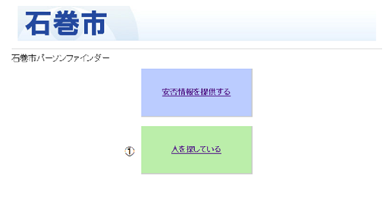

PersonFinder機能：人を探している
対象者の情報を検索する場合、①「人を探している」をクリックします。

探している人の名字、名前、その一部を入力後、「この人を探す」をクリックすることにより、検索結果が表示されます。検索結果に情報が表示されない場合は、「行方不明者の新しい記録を作成する」ボタンをクリックし、情報を登録します。
対象者の情報を入力し、「この記録を登録」ボタンをクリックし、情報を登録します。